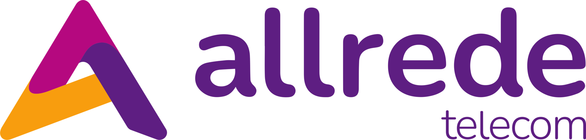

roteiro para aprovação · Kayke.hs
Vídeo motion Allrede Telecom
Roteiro e prévia das cenas para aprovação
A ideia
O vídeo começa com uma situação que todo mundo já viveu: a internet travando no melhor momento. Depois a Allrede entra como a solução, com fibra óptica, planos de até 1000 Mega, o app Minha All e os prêmios da empresa. Fecha com o convite para chamar no WhatsApp.
O visual segue as cores da marca, com elementos em 3D e câmera sempre em movimento suave.
Narração completa
A sua série travou de novo? E sempre na melhor parte. E quando a casa toda conecta junto, aí não tem internet que aguente. Pra isso existe a Allrede. Internet de fibra óptica, com planos de até mil mega. Pra todo mundo usar ao mesmo tempo: filme, jogo, home office e chamada de vídeo, sem travar. E tudo na palma da mão, pelo app Minha All. A Allrede é o provedor número um do Brasil, reconhecida por quem usa. Viva uma experiência completa. Chame a gente no WhatsApp agora.
CENA 03
Texto na tela
e quando a casa toda conecta junto…
O que aparece
Roteador com sinal fraco e quatro aparelhos ligados ao mesmo tempo: TV, celular, notebook e videogame.
Narração
“E quando a casa toda conecta junto, aí não tem internet que aguente.”
CENA 07
Texto na tela
pra todo mundo ao mesmo tempo
O que aparece
Quatro cards aparecem um por vez, cada um com um check verde.
Narração
“Pra todo mundo usar ao mesmo tempo: filme, jogo, home office e chamada de vídeo, sem travar.”
As imagens são prévias estáticas. Depois da aprovação, cada cena ganha animação, transições e a narração.